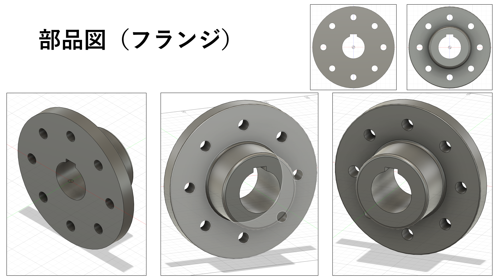
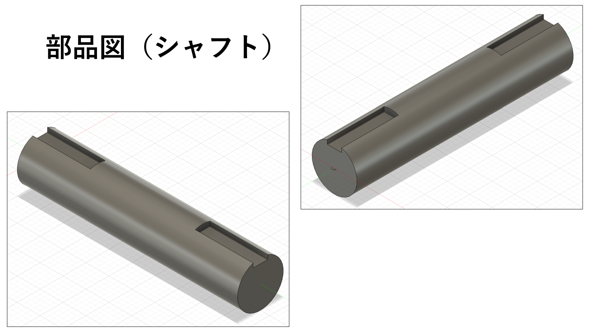
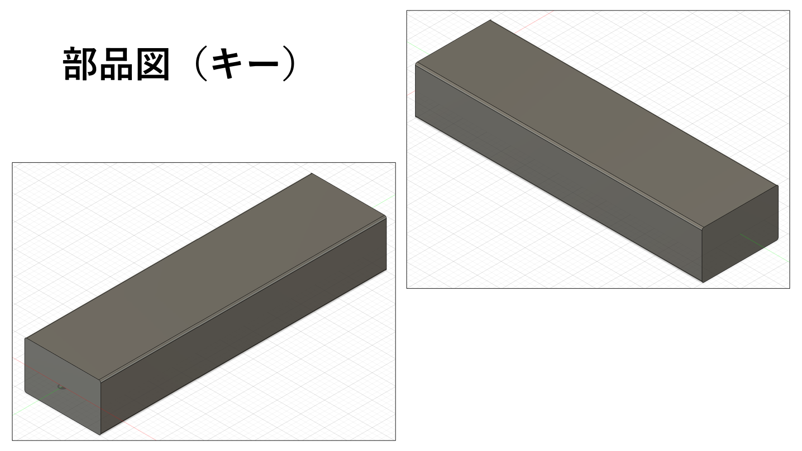
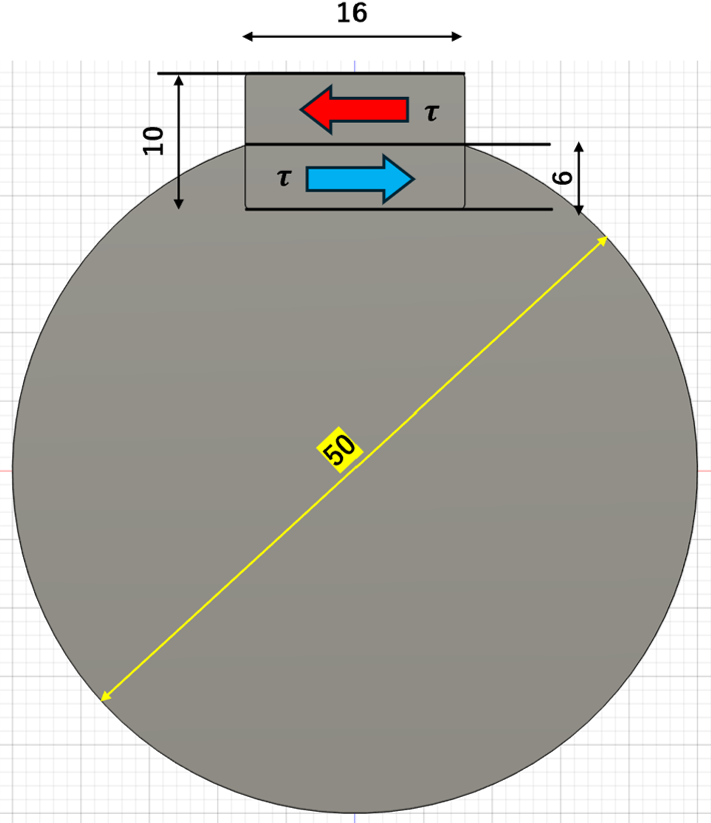
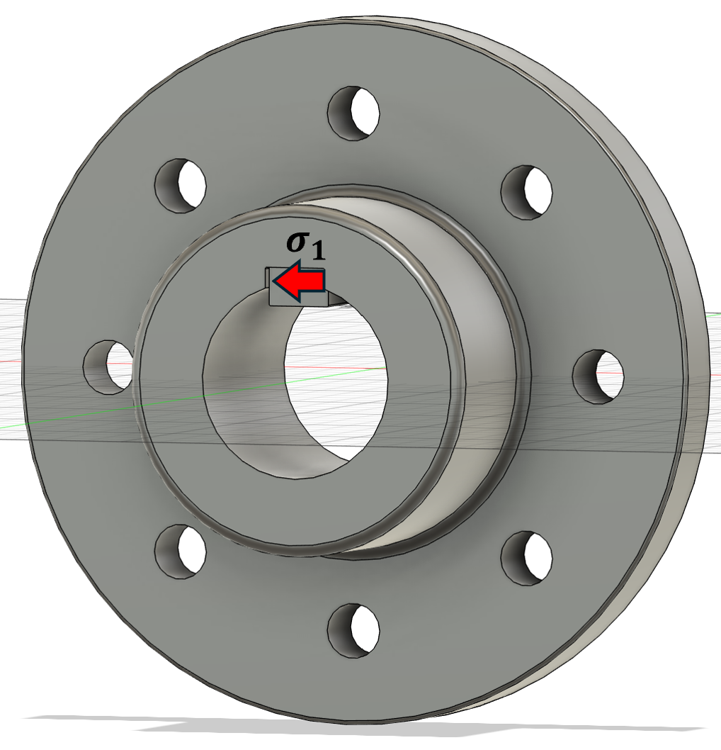
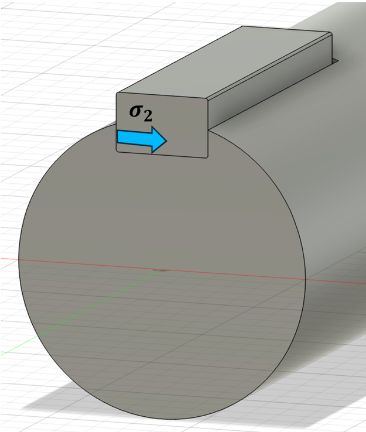
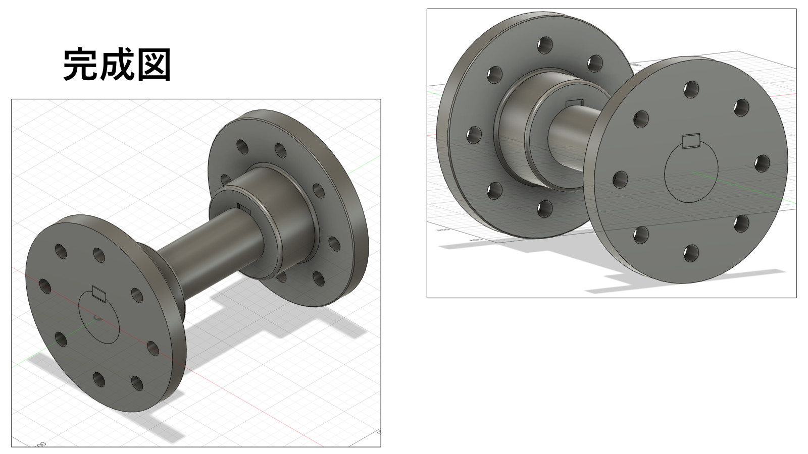
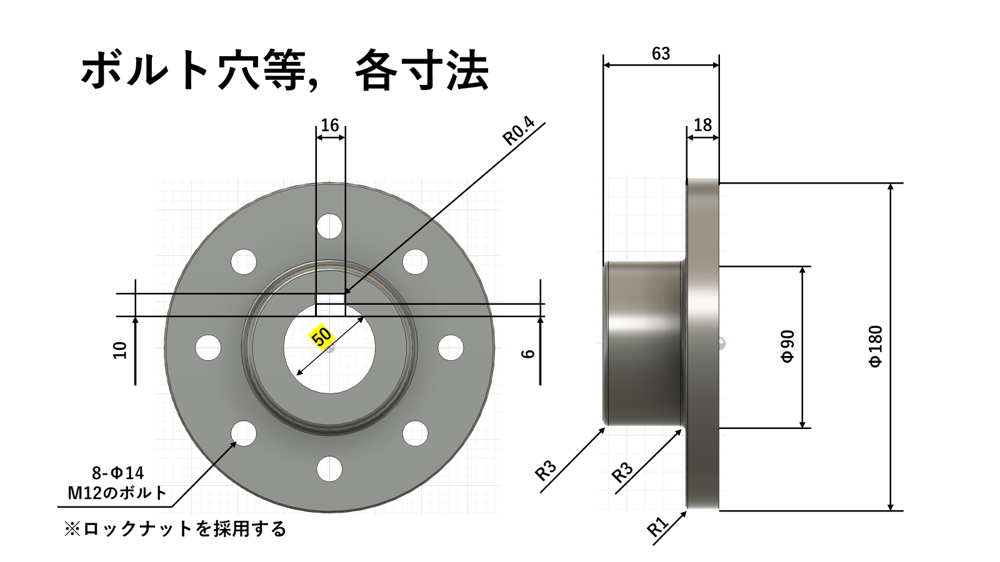

×
駆動モーターからの動力を仲介する中間軸用（加工には直接関係ない部分用）の設計・開発，強度計算検証，およびJIS規格に基づく選定基準を記録したものである．
構造をシンプルに保ち，故障リスクおよび組立の複雑性を排除するための最適化アプローチ．
過剰設計を避けつつ，実用回転に耐えうる最適なマテリアルと寸法のバランスを定義．
軸ブレや振動を極小化するため，幾何学的な直角度の確保を絶対的な設計要件として設定．
一体削り出しだと材料の79%を捨てることになり，コスト高になるため，セパレート構造とキー溝による締結メカニズムを確立．



① フランジが回る
② キーの上側 (4mm) が押される
③ キー全体が回ろうとする
④ キーの下側 (6mm) がシャフトを押す
⑤ シャフトも一緒に回る
JIS B 1301-1996 より，平行キー溝を b = 16, h = 10, r₂ = 0.4 と決定（長さ L = 60mm）．
| キーの呼び寸法 b × h | b₁ 及び b₂ の基準寸法 | 滑動形 b₁ 許容差(H9) | 滑動形 b₂ 許容差(D10) | 普通形 b₁ 許容差(N9) | 普通形 b₂ 許容差(Js9) | 締込み形 b₁及びb₂ 許容差(P9) | r₁ 及び r₂ | t₁ の基準寸法 | t₂ の基準寸法 | t₁及びt₂ の許容差 | 参考 適応する軸径 d |
|---|---|---|---|---|---|---|---|---|---|---|---|
| 2 × 2 | 2 | +0.025 / 0 | +0.060 / +0.020 | 0 / -0.004 | ±0.0125 | -0.006 / -0.031 | 0.08 ~ 0.16 | 1.2 | 1.0 | +0.1 / 0 | 6 ~ 8 |
| 3 × 3 | 3 | +0.025 / 0 | +0.060 / +0.020 | 0 / -0.029 | ±0.0125 | -0.006 / -0.031 | 0.08 ~ 0.16 | 1.8 | 1.4 | +0.1 / 0 | 8 ~ 10 |
| 4 × 4 | 4 | +0.030 / 0 | +0.078 / +0.030 | 0 / -0.030 | ±0.0150 | -0.012 / -0.042 | 0.16 ~ 0.25 | 2.5 | 1.8 | +0.1 / 0 | 10 ~ 12 |
| 5 × 5 | 5 | +0.030 / 0 | +0.078 / +0.030 | 0 / -0.030 | ±0.0150 | -0.012 / -0.042 | 0.16 ~ 0.25 | 3.0 | 2.3 | +0.1 / 0 | 12 ~ 17 |
| 6 × 6 | 6 | +0.030 / 0 | +0.078 / +0.030 | 0 / -0.030 | ±0.0150 | -0.012 / -0.042 | 0.16 ~ 0.25 | 3.5 | 2.8 | +0.1 / 0 | 17 ~ 22 |
| (7 × 7) | 7 | +0.036 / 0 | +0.098 / +0.040 | 0 / -0.036 | ±0.0180 | -0.015 / -0.051 | 0.16 ~ 0.25 | 4.0 | 3.3 | +0.2 / 0 | 20 ~ 25 |
| 8 × 7 | 8 | +0.036 / 0 | +0.098 / +0.040 | 0 / -0.036 | ±0.0180 | -0.015 / -0.051 | 0.16 ~ 0.25 | 4.0 | 3.3 | +0.2 / 0 | 22 ~ 30 |
| 10 × 8 | 10 | - | - | - | - | - | 0.25 ~ 0.40 | 5.0 | 3.3 | +0.2 / 0 | 30 ~ 38 |
| 12 × 8 | 12 | +0.043 | +0.120 | 0 | ±0.0215 | -0.018 | 0.25 ~ 0.40 | 5.0 | 3.3 | +0.2 / 0 | 38 ~ 44 |
| 14 × 9 | 14 | 0 | +0.050 | -0.043 | -0.061 | - | 0.25 ~ 0.40 | 5.5 | 3.8 | +0.2 / 0 | 44 ~ 50 |
| (15 × 10) | 15 | - | - | - | - | - | 0.25 ~ 0.40 | 5.0 | 5.3 | +0.2 / 0 | 50 ~ 55 |
| 16 × 10 [選定] | 16 | - | - | - | - | - | 0.25 ~ 0.40 (r₂=0.4) | 6.0 (t₁) | 4.3 (t₂) | +0.2 / 0 | 50 ~ 58 [軸径50mm適合] |
| 18 × 11 | 18 | - | - | - | - | - | - | 7.0 | 4.4 | - | 58 ~ 65 |
JIS B 1451-1991 より，以下の寸法とする．
8-Φ14 / M12のボルト ※ロックナットを採用する．
備考: ボルト穴の配置は，キー溝に対しておおむね振分けとする．
| 継手外径 A | D 最大(参考) 軸穴直径 | (参考) 最小軸穴直径 | L | C | B | F | n (個) | a | はめ込み部 E | はめ込み部 S₂ | はめ込み部 S₁ | 参考 RC (約) | 参考 RA (約) | 参考 C_g (約) | ボルト抜きしろ |
|---|---|---|---|---|---|---|---|---|---|---|---|---|---|---|---|
| 112 | 28 | 16 | 40 | 50 | 75 | 16 | 4 | 10 | 40 | 2 | 3 | 2 | 1 | 1 | 70 |
| 125 | 32 | 18 | 45 | 56 | 85 | 18 | 4 | 14 | 45 | 2 | 3 | 2 | 1 | 1 | 81 |
| 140 | 38 | 20 | 50 | 71 | 100 | 18 | 6 | 14 | 56 | 2 | 3 | 2 | 1 | 1 | 81 |
| 160 | 45 | 25 | 56 | 80 | 115 | 18 | 8 | 14 | 71 | 2 | 3 | 3 | 1 | 1 | 81 |
| 180 [選定] | 50 | 28 | 63 | 90 | 132 | 18 | 8 | 14 | 80 | 2 | 3 | 3 | 1 | 1 | 81 |
| 200 | 56 | 32 | 71 | 100 | 145 | 22.4 | 8 | 16 | 90 | 3 | 4 | 3 | 2 | 1 | 103 |
フランジシャフトは実際には回転するため，動的な強度計算を行い，信頼性を証明する必要がある．これ以降の強度計算では，以下を算出・検証する：
切り欠きなしとして算出
• 回転曲げの疲れ限度 σw0 に関して（S-N曲線参照）: S45C（調質材）の回転曲げ時の疲れ限度 σw0 = 264.6 [MPa]
• 安全率 S に関して（アンヴィンの安全率参照）: 鋼の片振りの繰り返し荷重より， S = 5
切り欠きあり（キー溝考慮）として算出
• 回転曲げの疲れ限度 σw0 = 264.6 [MPa]
• 安全率 S = 5 （鋼の片振りの繰り返し荷重より）
• 切り欠き係数 β に関して 【キー溝等の寸法】
・ 幅比： b / D = 16 / 50 = 0.32
・ 深さ比： t₂ / D = 6 / 50 = 0.12
・ フィレット比： r / D = 0.4 / 50 = 0.008
結論： 規格表（キーみぞを有する軸の応力集中規格）において該当箇所を見ると，切り欠き係数 β は β = 3.3 〜 3.8 となっており，今回は安全側を考慮して β = 3.5 とした．
【設計諸元設定】
工作機械のモーター出力 11kW, 最低回転数 500rpm, 軸径 50mm, キーの幅 b = 16mm, 高さ h = 10mm, 長さ L = 60mm として計算する．
出力 P [W], トルク T [N·m], 角速度 ω [rad/s] とすると，
回転数を N [rpm] とすると， ω [rad/s] = 2πN / 60 となり，
軸の半径（ d / 2 = 25 [mm] ）の位置に作用するものと考えると，

判定：S45Cの動的な許容応力（切り欠きなし）は， σal1 = 52.92 [MPa] である．
よって， τ < σal1 となり，設計基準を満たす．

判定：S45Cの動的な許容応力（切り欠きなし）は， σal1 = 52.92 [MPa] である．
よって， σ₁ < σal1 となり，設計基準を満たす．

判定：S45Cの動的な許容応力（切り欠きなし）は， σal1 = 52.92 [MPa] である．
よって， σ₂ < σal1 となり，設計基準を満たす．
シャフトの極断面係数： Zp
判定：S45Cの動的な許容応力（切り欠きあり）は， σal2 = 15.12 [MPa] である．
よって， τs < σal2 となり，設計基準を満たす．
全ての設計応力（キーのせん断応力，フランジ側・シャフト側のキー溝面圧，およびキー溝切り欠きを考慮したシャフト自体のねじりせん断応力）は，調質材S45Cの動的許容応力の限界値を下回っており，本フランジシャフト設計の構造的な安全強度基準および信頼性が証明された．
設計・強度計算に基づき，最終的にアセンブリされたフランジシャフトの完成図である．各画像をクリックすると拡大可能．

フランジ，シャフト，キー，ボルトが一体となった完成状態

ボルトの規格，はめ込み寸法